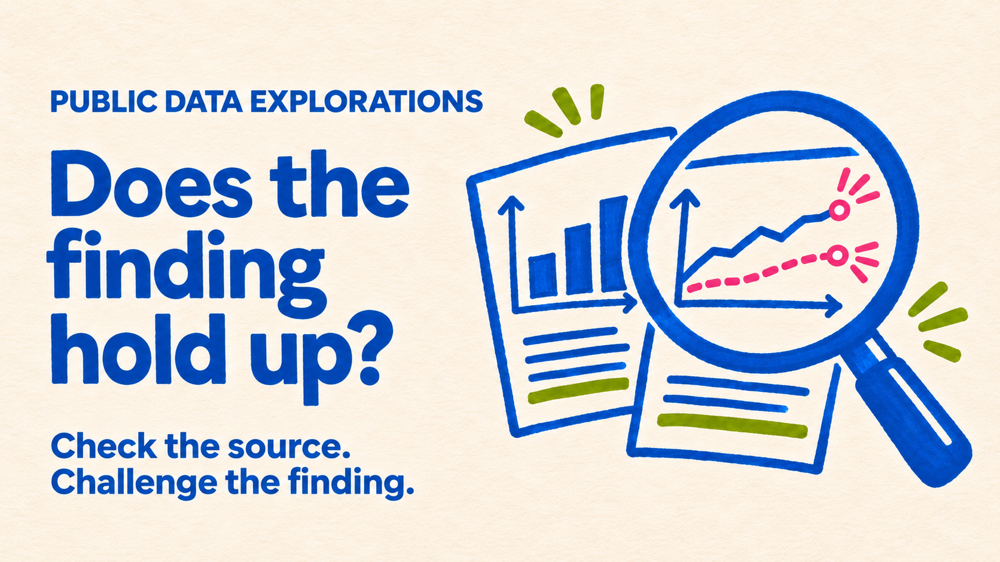

Public dataset
NPCI monthly UPI statistics.

Public data explorations is a growing collection of independent data-visualisation projects built entirely from openly published sources. Each exploration turns a complex dataset into a clear, verifiable story while preserving a traceable path back to the original evidence. Every published number is designed to be reproducible from its cited source.
I built it with my own approval-gated AI framework. A public dataset becomes four connected artifacts, followed by platform-ready video and social formats—all produced through one traceable workflow.
NPCI monthly UPI statistics.
The strongest defensible story, built from the profiled data and its context.
Checks the claims, caveats and limits of the analysis.
Contains validated measures only.
Applies the shared theme and prepares the story for publication.
Adapts the approved story to the right format for each platform.
Times depend on the quantity and quality of the data. These estimates are for a dataset like this one: 79 months of clean, official NPCI totals.
Each exploration applies the same framework to a different public question. Watch the short overview, read what the project investigates, then open the full interactive story.
A scroll-driven exploration of 79 months of official NPCI data. It traces how UPI moved from one billion monthly payments to hundreds of millions each day, while the average payment value fell—revealing both scale and changing everyday behaviour.
Explore the data story